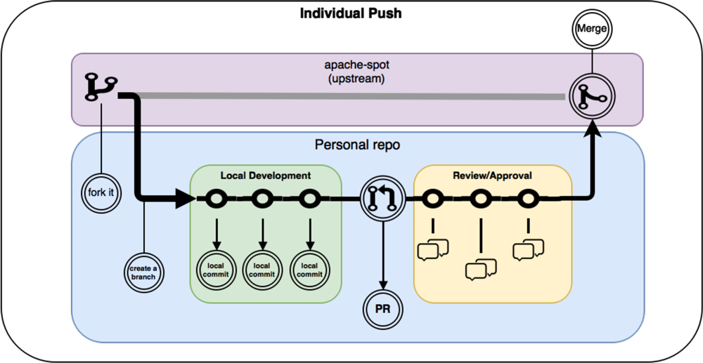
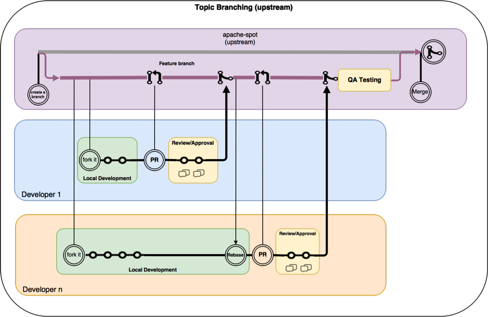

Proposed Apache-Spot (incubating) Commit Workflow
NOTE: Most of this guide is based on ASF Documentation.
This guide is meant to provide a workflow for committers of Apache Spot. The proposed workflow is for using git with apache-spot codebase.
Depending the nature of the change two different approaches can be used to commit to Apache Spot: Individual Push or Topic Branding.
Individual Push (most commonly used by the community):

Steps:
- For the Github repository at https://github.com/apache/incubator-spot if you haven't already. For more information about Fork please go to: https://help.github.com/articles/fork-a-repo/
- Clone your fork, create a new branch named after a Jira issue (i.e. spot-100).
- Push commits to your local branch.
- Test it!!!
- Create a pull request (PR) against the upstream repo (master) of apache-spot. For more information about how to create a pull request please go to: https://help.github.com/articles/about-pull-requests/.
- Wait for the maintainers to review your PR.
Topic Branching (upstream)
What are a topic branches?
According to the git definition: "A topic branch is a short-lived branch that you create and use for a single particular feature or related work." (https://git-scm.com/book/en/v2/Git-Branching-Branching-Workflows#Topic-Branches)
Sometimes a new major feature will have dependencies between modules or developers that can't be separated into individual pushes, when this happens, a topic branch will be created to deliver the complete functionality before the merge with the upstream (encapsulated dev enviroment).
In order to create a topic branch, three requirements are needed:
- A design document must be uploaded using Jira. This design must be approved by the maintainers.
- A voting process will be required to approve the topic branch creation, at least 3 maintainers need to approve it.
- A commitment to delete the branch after merging it into the upstream branch must be done. The topic branch should only exist while the work is still in progress.
A meaningful name must be given to the branch. It is recommended to use JIRA issue created with the design document to link the branch.

IMPORTANT: There shouldn't be a push without a Jira created previously
Approvals and Voting Process:
For code-modification, +1 votes are in favor of the proposal, but -1 votes are vetos and kill the proposal dead until all vetoers withdraw their -1 votes.
Unless a vote has been declared as using lazy consensus, three +1 votes are required for a code-modification proposal to pass.
Whole numbers are recommended for this type of vote, as the opinion being expressed is Boolean: 'I approve/do not approve of this change.'